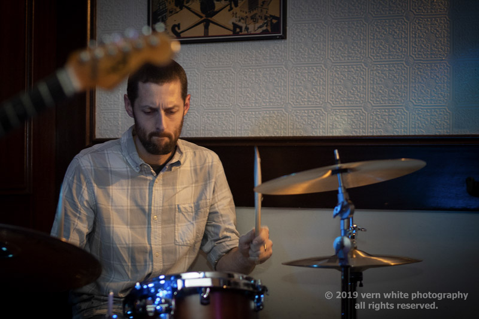

Mike Almas
Guitar/Vocals
Mike is a well known and respected songwriter, guitarist, and performer in the Southern Ontario region and has played a solid role in the area's music scene. His ability on the guitar is a force to be reckoned with as is his knack for creating memorable and danceable music. Add stage presence, rapport with any audience, sonic energy and you have an experience not soon forgotten.
Steve Hilbert
Bass
Steve Hilbert is an electric and electric upright bass player from Hamilton who plays several styles of music. He has played with a diverse collection of musicians that include Groove Corporation, the Jack Peddler Band, Neraj Prem's Sympathetic Strings, Done Deel, Rag Doll, the Dury Lane Theatre Orchestra and several rock, funk and reggae tribute bands. He is also a Music Teacher in Hamilton.
Cam Colburn
Drums

Originally from St. Catharines, Cameron spent his formative years on Canada’s west coast where he immersed himself in Victoria’s vibrant music community. Since joining the Hamilton music scene, Cam has performed with a variety of talented musicians spanning multiple music genres including rock, jazz and classical. One of Cam's biggest thrills is playing energetic music for enthusiastic audiences.
Follow us on social media:


Follow us on social media: